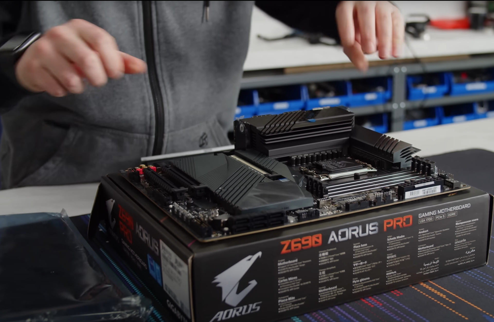
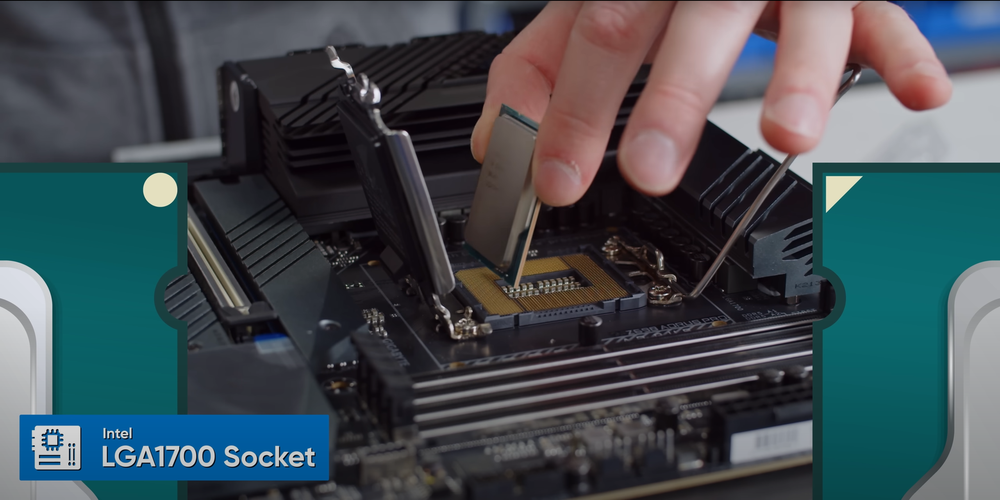
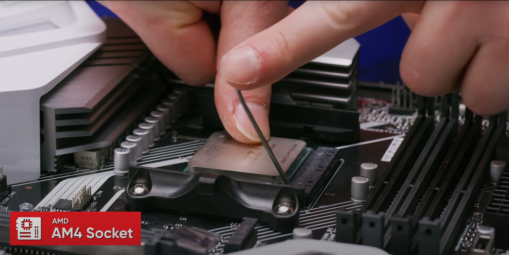
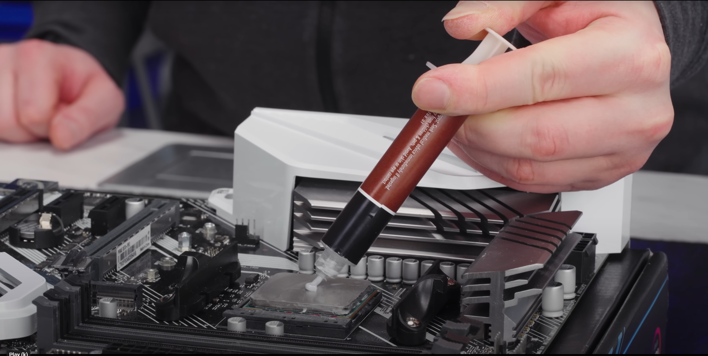
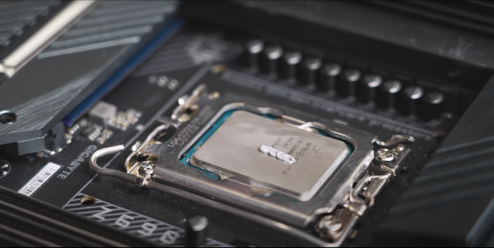
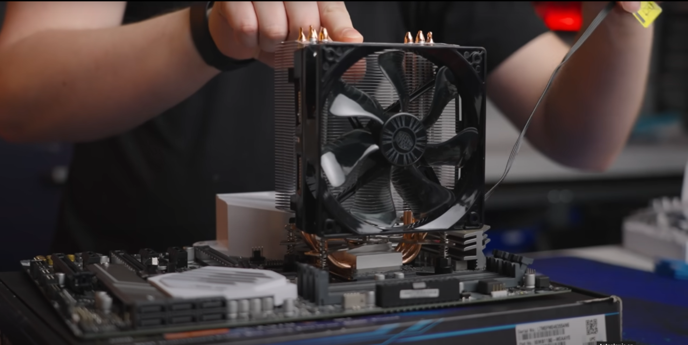
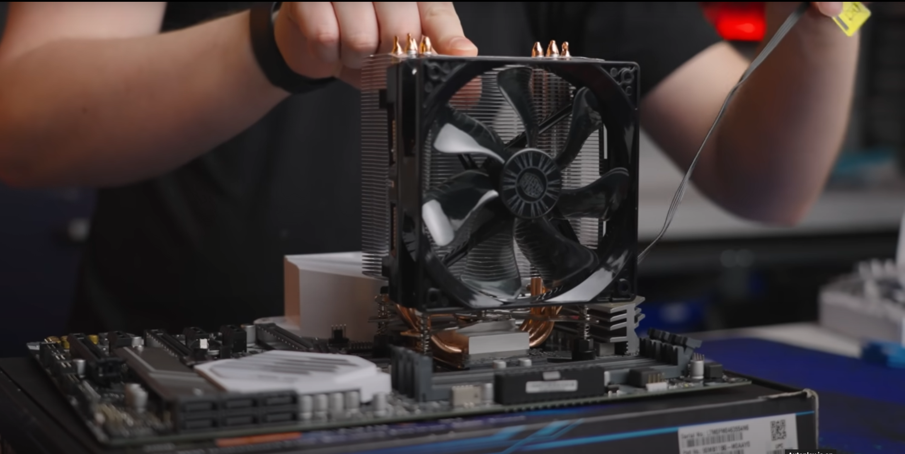
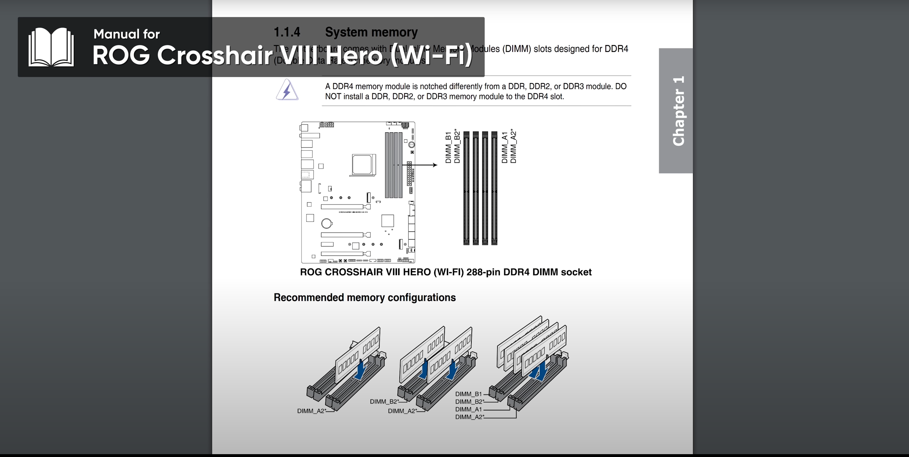
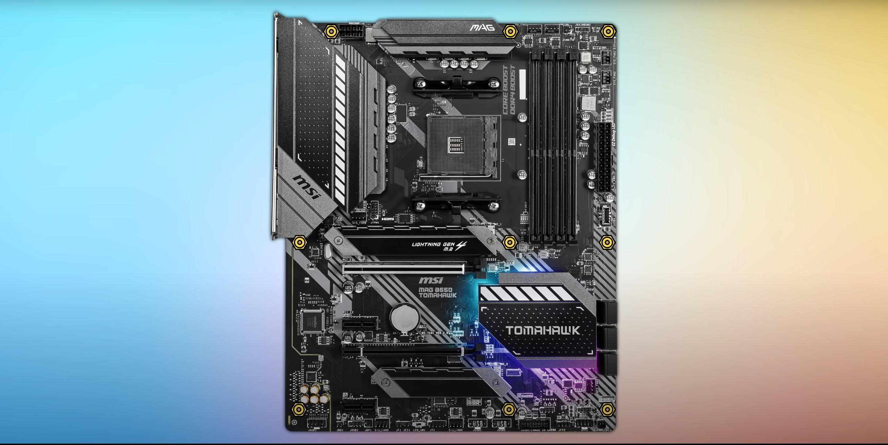
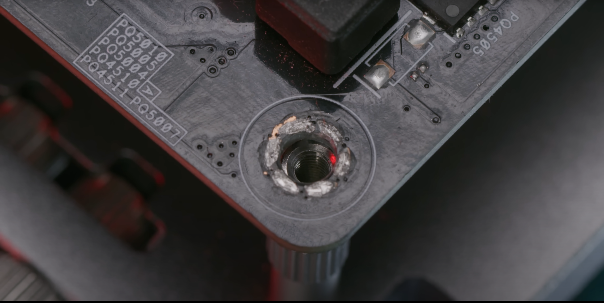

Take the motherboard and place it on a static free surface. The box that it came in will do. Install the processor into the corresponding socket on the mother board: there are two different types of processors (for the purposes of this demo) that will need to have the corresponding socket type. Intel chips will be of the LGA (Land Grid Array) arrangement where the pins are located in the motherboard socket. AMD chips will be of the PGA (Pin Grid Array) variety where the pins are located on the bottom of the processor. Caution is advised when dealing with a PGA processor. Make sure to place the processor VERY carefully so as not to bend any of the pins. DO NOT force the processor in. As soon as the processor is placed carefully and lined up properly, pull the lever next to the socket on the mother board to lock it in place.
  Apply thermal paste to the top of the processor. Apply the thermal paste sparingly. A little goes a long way; just a dot or two is enough. The thermal paste helps the heat from the processor move into the heat sink and then out from the fan on the CPU cooler.
 Install the CPU cooler. This process may vary depending on the processor and motherboard. The cooler will come with the provided bracket and accompanying hardware. A more in-depth description can be found in the product’s user manual. Make sure that the power cables on the cooler are connected to the corresponding ports on the motherboard.

 

After the processor is installed, move to the RAM. Insert the RAM sticks into the correct RAM slot. Use firm force to make sure that the RAM is properly seated. If done correctly, there will be a slight clicking noise. Once the click is heard, fasten the gates at the end of the slot on either side of the slot to secure the RAM.


Insert the motherboard with the processor and the RAM installed into the computer case. There will be mounting holes on the edges of the motherboard that correspond to standoff mounting points inside the case. This will vary. Ensure the mounting points are properly aligned. If not done correctly, and standoffs are touching circuitry on the bottom of the mother board, there is a risk of completing a short-circuit and destroying the system.
 